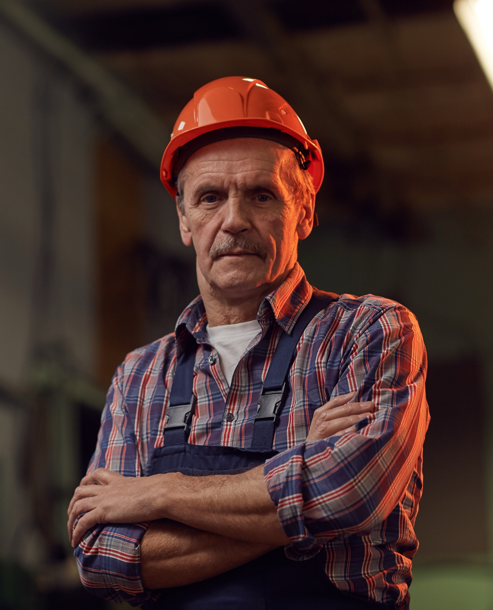

Based on Figma node 11636:18247 ("USPs / Vertical / Desktop"), authored at a 1440×992 frame. Layout structure, gaps, padding, radii and the 560:688 column proportion come from that node; the card caps at 1920px and centres, per the design. Scaling deviation: Figma pins the image at a fixed 560×692, whereas here the image width holds the 560:688 ratio against the USP column and its height tracks that column, so the two always share a flush top and bottom edge.
Sub-copy uses the node's Body/Lg Body style (20px/28px). Review deviations from the Figma file: USP titles stepped up to 28px/36px (from 24px/32px), card vertical padding raised to 48px (from 32px), the number-to-copy gap set to 48px (from 40px), the image/USP gap widened to 96px (from 64px), and every sub-copy line held to exactly two lines at any width via a 515px max-width. The logo lockup matches node 11636:18263 exactly, including that node's non-uniform scale of the artwork.
Motion (not specified in the Figma file): the dot device pulses on an infinite loop, the USP cards cascade in on scroll, and the photo has a scroll-driven parallax. All three are disabled under prefers-reduced-motion.
Font note: "Neue Haas Unica W1G" isn't installed yet, so text currently falls back to Manrope/system sans and line-wrapping may differ slightly from the spec. Drop NeueHaasUnicaW1G-Heavy.woff2 and NeueHaasUnicaW1G-Medium.woff2 into components/WhyATB/fonts/ and the @font-face rules at the top of this file will pick them up automatically.

No win, no fee
You won’t pay legal fees upfront, and we’ll explain costs clearly from the start.
We cover the costs so you don't have to
From medical reports to expert fees, we front all the costs of your claim, with no interest charges.
Clear advice, in plain English
We explain your options clearly, without legal jargon or unnecessary complexity.
Speak directly to a lawyer
No call centre. When you contact us, you’ll speak to someone who understands your situation.